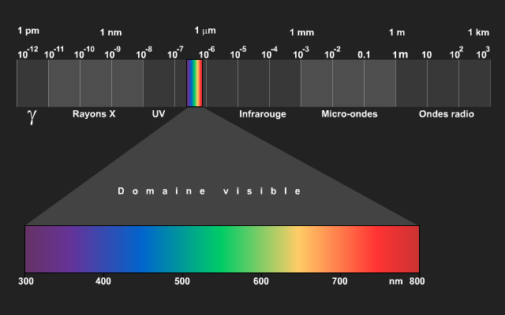

Une onde radioélectrique, communément abrégée en onde radio, est une onde électromagnétique dont la fréquence est inférieure à 300 GHz, soit une longueur d'onde dans le vide supérieure à 1 millimètre. (wikipédia)
Les ondes radio sont modulées pour porter une information (un signal), par exemple en modulation d'amplitude pour la radio AM, en modulation de fréquence pour la radio FM, en modulation de phase dans d'autres applications ou en modulation d'impulsion pour les radars. D'autres types de modulation existent, combinant une modulation de phase et une modulation d'amplitude par exemple. (Wikipédia)
Nous utilisons donc les ondes radios pour la plupart des moyens de communications terrestres
Les ondes radios dans le cas du projet HAARP peuvent également être utilisées pour déclencher des phénomènes physiques.